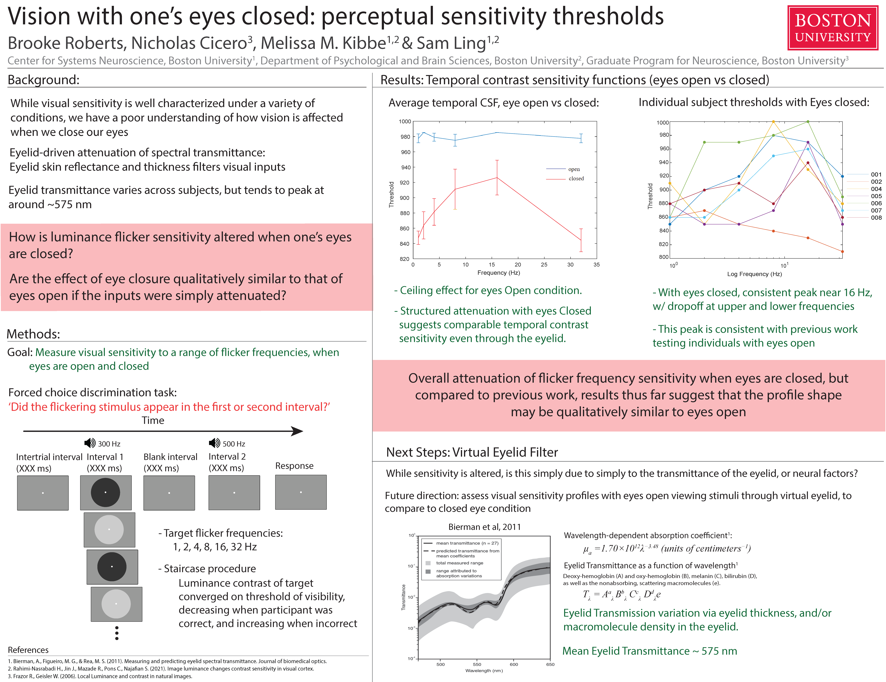

Details about my neuroscience research and projects.
This project investigated how well the eyelid transmits visual information when closed, testing nine participants' sensitivity to flickering light at different frequencies. We found that vision through closed eyelids follows a structured, predictable pattern — suggesting the eyelid acts more like a filter than a complete block.

Click to zoom in